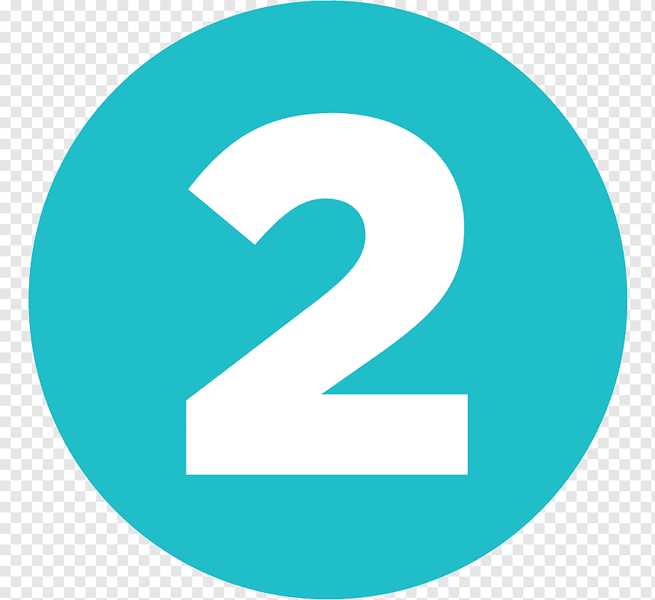

Dedica tiempo a realizar una actividad que disfrutes
Aprender algún instrumento musical, lee, inscríbete a un taller de manualidades, cocina, o muchos más.
Mejora tu alimentación
Pon atención a lo que comes. Destina más tiempo a cada comida y decide de manera inteligente los menús de la semana. Aliméntate balanceadamente, incluyendo frutas, verduras, legumbres, proteína y carbohidratos saludables. Anímate a preparar nuevas recetas y experimenta sabores diferentes.